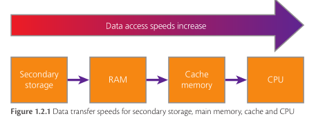

Primary Memory
By Jeetaditya Chatterjee
RAM ROM and the bar
Press s for speaker notes
Why do we need primary storage
RAM
- Fast
- Volatile
- can be read from and written to
The Purpose

ROM
- Non Volatile
- read only
The Purpose
The differences
- Ram Is volatile while ROM is not
- RAM can be read from and written to while rom can only be read from
- RAM holds the OS and active programs while ROM holds the data and instructions required to start the computer
Virtual Memory
Questions
State 2 differences between RAM and ROM?
What is held in RAM when the computer is running?
How might installing more RAM affect the use of virtual memory?
Question 4